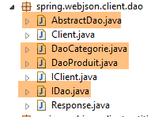
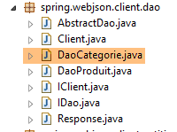
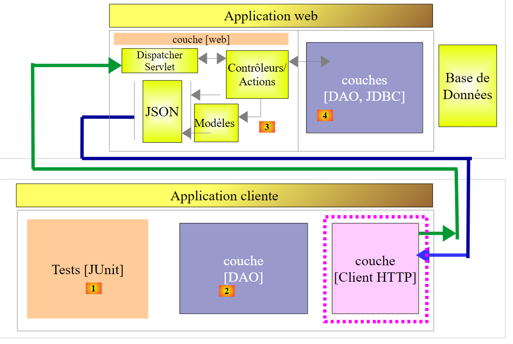
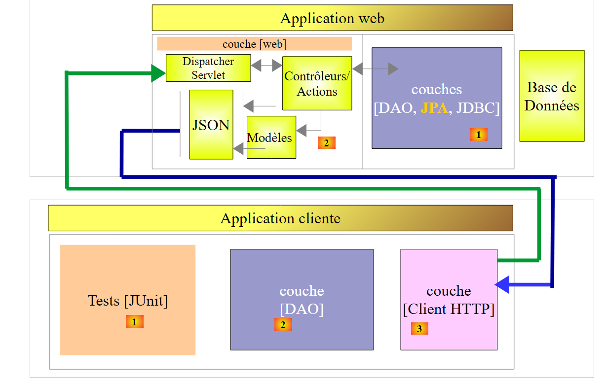
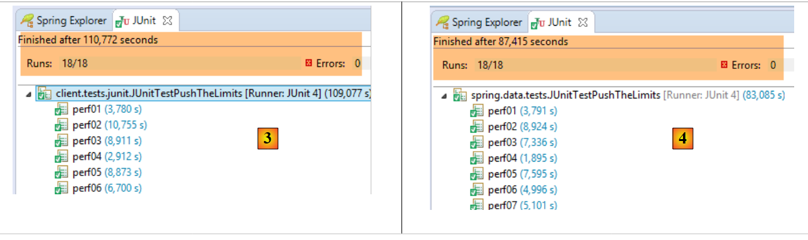
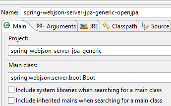

18. Un client programmé pour le service web / jSON
Maintenant que la base [dbproduitscategories] est disponible sur le web, nous allons écrire une application qui l'exploite. On aura alors l'architecture client / serveur suivante :
 |
L'application cliente aura trois couches :
- une couche [Client HTTP] [3] pour communiquer avec l'application web / jSON qui expose la base de données ;
- une couche [DAO] [2] qui présentera la même interface que la couche [DAO] [4] ;
- une couche de tests JUnit [1] pour vérifier que le client et le serveur font bien leur travail ;
18.1. Le projet Eclipse
Le projet Eclipse du client est le suivant :
 |
 |  |  |
 |  |
- le package [spring.webjson.client.config] contient la configation Spring de la couche [DAO] ;
- le package [spring.webjson.client.dao] contient l'implémentation de la couche [DAO] ;
- le package [spring.webjson.client.entities] contient les objets échangés avec le service web / jSON. Nous les connaissons ; tous ;
- le package [spring.webjson.client.infrastructure] contient les classes d'exception utilisées par le projet. Nous les connaissons toutes ;
18.2. Configuration Maven du projet
Le projet est un projet Maven configuré par le fichier [pom.xml] suivant :
<project xmlns="http://maven.apache.org/POM/4.0.0" xmlns:xsi="http://www.w3.org/2001/XMLSchema-instance"
xsi:schemaLocation="http://maven.apache.org/POM/4.0.0 http://maven.apache.org/xsd/maven-4.0.0.xsd">
<modelVersion>4.0.0</modelVersion>
<groupId>dvp.spring.database</groupId>
<artifactId>spring-webjson-client-generic</artifactId>
<version>0.0.1-SNAPSHOT</version>
<description>Client console du serveur web / jSON</description>
<name>spring-webjson-client-generic</name>
<properties>
<project.build.sourceEncoding>UTF-8</project.build.sourceEncoding>
<java.version>1.7</java.version>
</properties>
<parent>
<groupId>org.springframework.boot</groupId>
<artifactId>spring-boot-starter-parent</artifactId>
<version>1.2.3.RELEASE</version>
</parent>
<dependencies>
<!-- Spring -->
<dependency>
<groupId>org.springframework</groupId>
<artifactId>spring-web</artifactId>
</dependency>
<!-- librairie jSON utilisée par Spring -->
<dependency>
<groupId>com.fasterxml.jackson.core</groupId>
<artifactId>jackson-core</artifactId>
</dependency>
<dependency>
<groupId>com.fasterxml.jackson.core</groupId>
<artifactId>jackson-databind</artifactId>
</dependency>
<!-- composant utilisé par Spring RestTemplate -->
<dependency>
<groupId>org.apache.httpcomponents</groupId>
<artifactId>httpclient</artifactId>
</dependency>
<!-- Google Guava -->
<dependency>
<groupId>com.google.guava</groupId>
<artifactId>guava</artifactId>
<version>16.0.1</version>
</dependency>
<!-- bibliothèque de logs -->
<dependency>
<groupId>org.springframework.boot</groupId>
<artifactId>spring-boot-starter-logging</artifactId>
</dependency>
<!-- Spring Boot Test -->
<dependency>
<groupId>org.springframework.boot</groupId>
<artifactId>spring-boot-starter-test</artifactId>
<scope>test</scope>
</dependency>
<!-- Spring Boot -->
<dependency>
<groupId>org.springframework.boot</groupId>
<artifactId>spring-boot</artifactId>
<scope>test</scope>
</dependency>
</dependencies>
<!-- plugins -->
<build>
<plugins>
<plugin>
<groupId>org.apache.maven.plugins</groupId>
<artifactId>maven-surefire-plugin</artifactId>
<version>2.18.1</version>
</plugin>
</plugins>
</build>
</project>
- lignes 16-20 : le projet Maven parent [spring-boot-starter-parent] qui nous permet de définir un certain nombre de dépendances sans leur version, celle-ci étant définie dans le projet parent ;
- lignes 24-27 : bien que nous n'écrivions pas une application web, nous avons besoin de la dépendance [spring-web] qui amène avec elle la classe [RestTemplate] qui permet de s'interfacer aisément avec une application web / jSON ;
- lignes 29-36 : une bibliothèque jSON ;
- lignes 38-41 : une dépendance qui va nous permettre de fixer un timeout aux requêtes HTTP du client. Un timeout est un temps maximal d'attente de la réponse du serveur. Au-delà de ce temps, le client signale une erreur de timeout en jetant une exception ;
- lignes 43-48 : la bibliothèque Google Guava ;
- lignes 50-53 : la bibliothèque de logs ;
- lignes 54-64 : la dépendance pour les tests JUnit. Elle amène notamment la bibliothèque JUnit 4 nécessaire pour les tests. Ces dépendances ont l'attribut [<scope>test</scope>] indiquant qu'elles ne sont nécessaires que pour la phase de tests. Elles ne sont pas incluses dans l'archive finale du projet ;
18.3. Configuration Spring
|
La classe [AppConfig] fait la configuration Spring du client HTTP. Son code est le suivant :
package spring.webjson.client.config;
import java.util.ArrayList;
import java.util.List;
import org.springframework.beans.factory.config.ConfigurableBeanFactory;
import org.springframework.context.annotation.Bean;
import org.springframework.context.annotation.ComponentScan;
import org.springframework.context.annotation.Configuration;
import org.springframework.context.annotation.Scope;
import org.springframework.http.client.HttpComponentsClientHttpRequestFactory;
import org.springframework.http.converter.HttpMessageConverter;
import org.springframework.http.converter.json.MappingJackson2HttpMessageConverter;
import org.springframework.web.client.RestTemplate;
import com.fasterxml.jackson.databind.ObjectMapper;
import com.fasterxml.jackson.databind.ser.impl.SimpleBeanPropertyFilter;
import com.fasterxml.jackson.databind.ser.impl.SimpleFilterProvider;
@Configuration
@ComponentScan({ "spring.webjson.client.dao" })
public class AppConfig {
// constantes
static private final int TIMEOUT = 1000;
static private final String URL_WEBJSON = "http://localhost:8081";
// filtres jSON
@Bean
public ObjectMapper jsonMapper(RestTemplate restTemplate) {
return ((MappingJackson2HttpMessageConverter) (restTemplate.getMessageConverters().get(0))).getObjectMapper();
}
@Bean
@Scope(value = ConfigurableBeanFactory.SCOPE_PROTOTYPE)
ObjectMapper jsonMapperShortCategorie(RestTemplate restTemplate) {
ObjectMapper jsonMapper = jsonMapper(restTemplate);
jsonMapper.setFilters(new SimpleFilterProvider().addFilter("jsonFilterCategorie",
SimpleBeanPropertyFilter.serializeAllExcept("produits")));
return jsonMapper;
}
@Bean
@Scope(value = ConfigurableBeanFactory.SCOPE_PROTOTYPE)
ObjectMapper jsonMapperLongCategorie(RestTemplate restTemplate) {
ObjectMapper jsonMapper = jsonMapper(restTemplate);
jsonMapper.setFilters(new SimpleFilterProvider().addFilter("jsonFilterCategorie",
SimpleBeanPropertyFilter.serializeAllExcept()).addFilter("jsonFilterProduit",
SimpleBeanPropertyFilter.serializeAllExcept("categorie")));
return jsonMapper;
}
@Bean
@Scope(value = ConfigurableBeanFactory.SCOPE_PROTOTYPE)
ObjectMapper jsonMapperShortProduit(RestTemplate restTemplate) {
ObjectMapper jsonMapper = jsonMapper(restTemplate);
jsonMapper.setFilters(new SimpleFilterProvider().addFilter("jsonFilterProduit",
SimpleBeanPropertyFilter.serializeAllExcept("categorie")));
return jsonMapper;
}
@Bean
@Scope(value = ConfigurableBeanFactory.SCOPE_PROTOTYPE)
ObjectMapper jsonMapperLongProduit(RestTemplate restTemplate) {
ObjectMapper jsonMapper = jsonMapper(restTemplate);
jsonMapper.setFilters(new SimpleFilterProvider().addFilter("jsonFilterProduit",
SimpleBeanPropertyFilter.serializeAllExcept()).addFilter("jsonFilterCategorie",
SimpleBeanPropertyFilter.serializeAllExcept("produits")));
return jsonMapper;
}
@Bean
public RestTemplate restTemplate(int timeout) {
// création du composant RestTemplate
HttpComponentsClientHttpRequestFactory factory = new HttpComponentsClientHttpRequestFactory();
RestTemplate restTemplate = new RestTemplate(factory);
// convertisseur jSON
List<HttpMessageConverter<?>> messageConverters = new ArrayList<HttpMessageConverter<?>>();
messageConverters.add(new MappingJackson2HttpMessageConverter());
restTemplate.setMessageConverters(messageConverters);
// timeout des échanges
factory.setConnectTimeout(timeout);
factory.setReadTimeout(timeout);
// résultat
return restTemplate;
}
@Bean
public int timeout() {
return TIMEOUT;
}
@Bean
public String urlWebJson() {
return URL_WEBJSON;
}
}
- ligne 20 : la classe est une classe de configuration Spring ;
- ligne 21 : d'autres composants Spring sont à chercher dans le package [spring.webjson.client.dao] ;
- ligne 25 : on se fixe un timeout d'une seconde (1000 ms) ;
- lignes 88-91 : le bean qui rend cette valeur ;
- ligne 26 : l'URL du service web / jSON ;
- lignes 93-96 : le bean qui rend cette valeur ;
- lignes 72-86 : la configuration de la classe [RestTemplate] qui assure les échanges avec le service web / jSON. Lorsqu'on n'a pas à la configurer, on peut en disposer dans le code par un simple [new RestTemplate()]. Ici, nous voulons fixer le timeout des échanges avec le service web / jSON. Le bean [timeout] de la ligne 89 est passé en paramètre de la méthode [restTemplate] de la ligne 73 ;
- ligne 75 : le composant [HttpComponentsClientHttpRequestFactory] est le composant qui nous permet de fixer le timeout des échanges (lignes 82-83) ;
- ligne 76 : la classe [RestTemplate] est construite avec ce composant. Comme elle s'appuie sur celui-ci pour communiquer avec le service web / jSON, les échanges seront bien soumis au timeout ;
- lignes 78-80 : on associe à la classe [RestTemplate] un convertisseur jSON. Nous en avons déjà parlé lors de l'étude du service web. Le client et le serveur s'échangent des lignes de texte. Un convertisseur s'occupe de sérialiser un objet en texte et inversement de désérialiser un texte en objet. Il peut y avoir plusieurs convertisseurs associés à la classe [RestTemplate] et celui choisi à un moment donné dépend des entêtes HTTP envoyés par le serveur. Ici, nous n'avons qu'un convertisseur jSON puisque les lignes de texte échangées sont du jSON ;
- lignes 82-83 : on fixe les timeout des échanges ;
- lignes 28-70 : définissent des filtres jSON. Ce sont les mêmes que ceux du serveur présentés au paragraphe 17.3.2.1 ;
- lignes 29-32 : le bean [jsonMapper] est le mappeur jSON du convertisseur [MappingJackson2HttpMessageConverter] que nous avons associé à la classe [RestTemplate]. Nous en avons besoin dans la définition des filtres jSON ;
- lignes 34-41 : un bean définissant le filtre jSON [catégorie sans ses produits]. La méthode [jsonMapperShortCategorie] reçoit en paramètre le bean [restTemplate] défini ligne 73 ;
- ligne 37 : on fait appel à la méthode [jsonMapper] de la ligne 30 pour récupérer le mappeur jSON ;
- lignes 38-39 : on fixe le filtre pour avoir une catégorie sans ses produits ;
- ligne 40 : on rend le mappeur jSON ainsi configuré ;
- lignes 42-51 : le filtre jSON pour avoir une catégorie avec ses produits ;
- lignes 53-60 : le filtre jSON pour avoir un produit sans sa catégorie ;
- lignes 62-70 : le filtre jSON pour avoir un produit avec sa catégorie ;
Tous ces beans vont être disponibles aux codes de la couche [DAO] ainsi qu'aux tests JUnit.
18.4. Implémentation du client HTTP
 |
Ci-dessus, c'est la couche [Client HTTP] qui dialogue avec le service web que nous venons de construire. Nous l'étudions maintenant.
 |
La classe [Client] implémente les échanges avec le service web / jSON. Elle implémente l'interface [IClient] suivante :
package spring.webjson.client.dao;
import org.springframework.http.HttpMethod;
public interface IClient {
public <T1, T2> T1 getResponse(String url, HttpMethod method, int errStatus, T2 body);
}
L'interface n'a qu'une méthode [getResponse] :
- ligne 6 : la méthode [getResponse] est une méthode générique paramétrée par deux types :
- [T1] : est le type de réponse attendu du serveur dans [Response<T1>], par exemple [List<Categorie>],
- [T2] : est le type du paramètre jSON posté par les opérations POST, par exemple [List<Produit>] ;
- ligne 6 : la méthode [getResponse] rend un résultat de type T1, par exemple [List<Categorie>] ;
- ligne 6 : les paramètres de [getResponse] sont les suivants :
- [String url] : l'URL à interroger ;
- [HttpMethod method] : méthode HTTP de la requête, GET ou POST selon les cas,
- [int errStatus] : code d'erreur à utiliser dans la classe [DaoException], si erreur il y a lors de la communication avec le serveur,
- [T2 body] : la valeur à poster si POST il y a ;
La classe [Client] implémente l'interface [IClient] de la façon suivante :
package spring.webjson.client.dao;
import java.net.URI;
import java.util.ArrayList;
import java.util.List;
import org.springframework.beans.factory.annotation.Autowired;
import org.springframework.core.ParameterizedTypeReference;
import org.springframework.http.HttpMethod;
import org.springframework.http.MediaType;
import org.springframework.http.RequestEntity;
import org.springframework.http.ResponseEntity;
import org.springframework.stereotype.Component;
import org.springframework.web.client.RestTemplate;
import spring.webjson.client.infrastructure.DaoException;
@Component
public class Client implements IClient {
// injections
@Autowired
protected RestTemplate restTemplate;
@Autowired
protected String urlServiceWebJson;
// local
private String simpleClassName = getClass().getSimpleName();
// requête générique
@Override
public <T1, T2> T1 getResponse(String url, HttpMethod method, int errStatus, T2 body) {
...
}
// liste des messages d'erreur d'une exception
protected List<String> getMessagesForException(Exception exception) {
...
}
}
- ligne 18 : la classe [Client] est un composant Spring qui peut donc être injecté dans d'autres composants Spring ;
- lignes 22-23 : injection du bean [RestTemplate] défini dans [AppConfig] (cf paragraphe 18.3) qui assure la communication avec le serveur ;
- lignes 24-25 : injection de l'URL du service web / jSON définie dans [AppConfig] (cf paragraphe 18.3) ;
- lignes 37-39 : la méthode privée [getMessagesForException] est une méthode utilitaire permettant d'obtenir la liste des messages d'erreur contenues dans une exception. Nous l'avons rencontrée à plusieurs reprises ;
Continuons :
// requête générique
@Override
public <T1, T2> T1 getResponse(String url, HttpMethod method, int errStatus, T2 body) {
// la réponse du serveur
ResponseEntity<Response<T1>> response;
try {
// on prépare la requête
RequestEntity<?> request = null;
if (method == HttpMethod.GET) {
request = RequestEntity.get(new URI(String.format("%s%s", urlServiceWebJson, url)))
.accept(MediaType.APPLICATION_JSON).build();
}
if (method == HttpMethod.POST) {
request = RequestEntity.post(new URI(String.format("%s%s", urlServiceWebJson, url)))
.header("Content-Type", "application/json").accept(MediaType.APPLICATION_JSON).body(body);
}
// on exécute la requête
response = restTemplate.exchange(request, new ParameterizedTypeReference<Response<T1>>() {
});
} catch (Exception e) {
// on encapsule l'exception
throw new DaoException(errStatus, e, simpleClassName);
}
...
}
- ligne 18 : l'instruction qui fait la requête au serveur et reçoit sa réponse. Le composant [RestTemplate] offre un nombre important de méthodes d'échange avec le serveur mais seule la méthode [exchange] admet des paramètres génériques. C'est pour cette raison qu'elle a été choisie. Le second paramètre fixe le type de la réponse attendue. Le premier paramètre est la requête de type [RequestEntity] (ligne 8). Le résultat de la méthode [exchange] est de type [ResponseEntity<Response<T1>>] (ligne 5). Le type [ResponseEntity] encapsule la réponse complète du serveur, entêtes HTTP et document envoyés par celui-ci. De même le type [RequestEntity] encapsule toute la requête du client incluant les entêtes HTTP et l'éventuelle valeur postée ;
- lignes 8-16 : il nous faut construire la requête de type [RequestEntity]. Elle est différente selon que l'on utilise un GET ou un POST pour faire la requête ;
- ligne 10 : la requête pour un GET. La classe [RequestEntity] offre des méthodes statiques pour créer les requêtes GET, POST, HEAD,... La méthode [RequestEntity.get] permet de créer une requête GET en chaînant les différentes méthodes qui construisent celle-ci :
- la méthode [RequestEntity.get] admet pour paramètre l'URL cible sous la forme d'une instance URI,
- la méthode [accept] permet de définir les éléments de l'entête HTTP [Accept]. Ici, nous indiquons que nous acceptons le type [application/json] que va envoyer le serveur ;
- la méthode [build] utilise ces différentes informations pour construire le type [RequestEntity] de la requête ;
- ligne 14 : la requête pour un POST. La méthode [RequestEntity.post] permet de créer une requête POST en chaînant les différentes méthodes qui construisent celle-ci :
- la méthode [RequestEntity.post] admet pour paramètre l'URL cible sous la forme d'une instance URI,
- la méthode [header] définit un entête HTTP. Ici on envoie au serveur l'entête [Content-Type: application/json] pour lui indiquer que la valeur postée va lui arriver sous la forme d'une chaîne jSON ;
- la méthode [accept] permet d'indiquer que nous acceptons le type [application/json] que va envoyer le serveur ;
- la méthode [body] fixe la valeur postée. Celle-ci est le 4ième paramètre de la méthode générique [getResponse] (ligne 1) ;
- lignes 20-23 : s'il se produit une erreur de communication avec le serveur on lance une exception de type [DaoException] avec pour code d'erreur, le paramètre [errStatus] passé en 3ième paramètre de la méthode générique [getResponse] (ligne 3) ;
La méthode [getResponse] se poursuit de la façon suivante :
// requête générique
@Override
public <T1, T2> T1 getResponse(String url, HttpMethod method, int errStatus, T2 body) {
...
// on récupère le corps de la réponse
Response<T1> entity = response.getBody();
int status = entity.getStatus();
// des erreurs côté serveur ?
if (status != 0) {
// on crée une exception
throw new DaoException(status, new RuntimeException(entity.getException()), simpleClassName);
} else {
// c'est bon
return entity.getBody();
}
}
- ligne 4 : nous avons reçu la réponse du serveur. Elle est de type [ResponseEntity<Response<T1>>] (ligne 5 du précédent code étudié) où la classe [Response] est la classe déjà utilisée côté serveur :
package spring.webjson.client.dao;
public class Response<T> {
// ----------------- propriétés
// statut de l'opération
private int status;
// l'éventuelle exception
private String exception;
// le corps de la réponse
private T body;
// constructeurs
public Response() {
}
public Response(int status, String exception, T body) {
this.status = status;
this.exception = exception;
this.body = body;
}
// getters et setters
...
}
Revenons à la méthode [getResponse] :
- ligne 6 : nous récupérons le document de type [Response<T1>] encapsulé dans la réponse. Ce type a les champs [int status, String exception, T1 body] ;
- ligne 7 : nous récupérons le [status] de la réponse qui est un code d'erreur ;
- lignes 9-12 : s'il y a erreur, alors on lance une exception reprenant les deux informations [status, exception] de la réponse du serveur ;
- ligne 14 : sinon nous rendons le type [T1] contenu dans la réponse de type [Response<T1>] ;
La classe [Client] est générale. Elle peut être utilisée pour tout client web / jSON.
18.5. Implémentation de la couche [Dao]
 |
 |
18.5.1. La classe [AbstractDao]
La couche [DAO] côté client présente la même interface que la couche [DAO] côté serveur (cf paragraphe 4.7) :
package spring.webjson.client.dao;
import java.util.List;
import spring.webjson.client.entities.AbstractCoreEntity;
public interface IDao<T extends AbstractCoreEntity> {
// liste de tous les entités T
public List<T> getAllShortEntities();
public List<T> getAllLongEntities();
// des entités particulières - version courte
public List<T> getShortEntitiesById(Iterable<Long> ids);
public List<T> getShortEntitiesById(Long... ids);
public List<T> getShortEntitiesByName(Iterable<String> names);
public List<T> getShortEntitiesByName(String... names);
// des entités particulières - version longue
public List<T> getLongEntitiesById(Iterable<Long> ids);
public List<T> getLongEntitiesById(Long... ids);
public List<T> getLongEntitiesByName(Iterable<String> names);
public List<T> getLongEntitiesByName(String... names);
// mise à jour de plusieurs entités
public List<T> saveEntities(Iterable<T> entities);
public List<T> saveEntities(@SuppressWarnings("unchecked") T... entities);
// suppression de toutes les entités
public void deleteAllEntities();
// suppression de plusieurs entités
public void deleteEntitiesById(Iterable<Long> ids);
public void deleteEntitiesById(Long... ids);
public void deleteEntitiesByName(Iterable<String> names);
public void deleteEntitiesByName(String... names);
public void deleteEntitiesByEntity(Iterable<T> entities);
public void deleteEntitiesByEntity(@SuppressWarnings("unchecked") T... entities);
}
La classe [AbstractDao] implémente l'interface [IDao]. C'est une classe analogue à la classe de même nom côté serveur (cf paragraphe 4.8). Elle sert de classe parent aux classes [DaoCategorie] et [DaoProduit]. Elle n'est pas identique pour deux raisons :
- côté serveur, la classe [AbstractDao] gère une information :
// injections
@Autowired
@Qualifier("maxPreparedStatementParameters")
protected int maxPreparedStatementParameters;
dont on n'a pas besoin ici.
- côté serveur, la classe [AbstractDao] utilise des annotations [@Transactional] pour encapsuler chaque méthode dans une transaction. Côté client, il n'y a pas de base de données à gérer. Cette annotation disparaît donc ;
La classe [AbstractDao] se contente de vérifier la validité des paramètres d'appel des méthodes de l'interface [IDao] avant de déléguer l'appel aux classes filles :
package spring.webjson.client.dao;
import java.util.ArrayList;
import java.util.List;
import spring.webjson.client.entities.AbstractCoreEntity;
import spring.webjson.client.infrastructure.MyIllegalArgumentException;
import com.google.common.collect.Lists;
public abstract class AbstractDao<T1 extends AbstractCoreEntity> implements IDao<T1> {
// local
protected String simpleClassName = getClass().getSimpleName();
@Override
public List<T1> getShortEntitiesById(Iterable<Long> ids) {
// validité de l'argument
List<T1> entities = checkNullOrEmptyArgument(true, ids);
if (entities != null) {
return entities;
}
// résultat
return getShortEntitiesById(Lists.newArrayList(ids));
}
@Override
public List<T1> getShortEntitiesById(Long... ids) {
// validité de l'argument
List<T1> entities = checkNullOrEmptyArgument(true, ids);
if (entities != null) {
return entities;
}
// résultat
return getShortEntitiesById(Lists.newArrayList(ids));
}
...
@Override
public void deleteEntitiesByEntity(@SuppressWarnings("unchecked") T1... entities) {
...
}
// méthodes privées ----------------------------------------------
private <T3> List<T1> checkNullOrEmptyArgument(boolean checkEmpty, Iterable<T3> elements) {
// elements null ?
if (elements == null) {
throw new MyIllegalArgumentException(222, new NullPointerException("L'argument ne peut être null"),
simpleClassName);
}
// elements vide ?
if (!elements.iterator().hasNext()) {
if (checkEmpty) {
throw new MyIllegalArgumentException(223, new RuntimeException("l'argument ne peut être une liste vide"),simpleClassName);
} else {
return new ArrayList<T1>();
}
}
// résultat par défaut
return null;
}
@SuppressWarnings("unchecked")
private <T3> List<T1> checkNullOrEmptyArgument(boolean checkEmpty, T3... elements) {
// elements null ?
if (elements == null) {
throw new MyIllegalArgumentException(222, new NullPointerException("L'argument ne peut être null"),simpleClassName);
}
// elements vide ?
if (elements.length == 0) {
if (checkEmpty) {
throw new MyIllegalArgumentException(223, new RuntimeException("L'argument ne peut être une liste vide"),
simpleClassName);
} else {
return new ArrayList<T1>();
}
}
// résultat par défaut
return null;
}
// méthodes protégées ----------------------------------------------
abstract protected List<T1> getShortEntitiesById(List<Long> ids);
abstract protected List<T1> getShortEntitiesByName(List<String> names);
abstract protected List<T1> getLongEntitiesById(List<Long> ids);
abstract protected List<T1> getLongEntitiesByName(List<String> names);
abstract protected List<T1> saveEntities(List<T1> entities);
abstract protected void deleteEntitiesById(List<Long> ids);
abstract protected void deleteEntitiesByName(List<String> names);
}
18.5.2. La classe [DaoCategorie]
 |
La classe [DaoCategorie] est la suivante :
package spring.webjson.client.dao;
import java.util.List;
import org.springframework.beans.factory.annotation.Autowired;
import org.springframework.context.ApplicationContext;
import org.springframework.http.HttpMethod;
import org.springframework.stereotype.Component;
import spring.webjson.client.entities.Categorie;
import spring.webjson.client.entities.CoreCategorie;
import spring.webjson.client.entities.CoreProduit;
import spring.webjson.client.entities.Produit;
import spring.webjson.client.infrastructure.DaoException;
import com.fasterxml.jackson.core.type.TypeReference;
import com.fasterxml.jackson.databind.ObjectMapper;
@Component
public class DaoCategorie extends AbstractDao<Categorie> {
@Autowired
private ApplicationContext context;
@Autowired
private IClient client;
...
}
- ligne 19 : la classe [DaoClient] est un composant Spring dans lequel on peut donc injecter d'autres composants Spring ;
- ligne 20 : la classe [DaoClient] étend la classe [AbstractDao<Categorie>] que nous venons de voir et implémente donc l'interface [IDao<Categorie>] ;
- lignes 22-23 : on injecte le contexte Spring afin d'avoir accès à ses beans ;
- lignes 24-25 : on injecte le client HTTP que nous venons de construire ;
Les implémentations des différentes méthodes de l'interface [DaoCategorie] suivent toutes le même schéma. Nous allons présenter trois méthodes, l'une s'appuyant sur une opération [GET], les deux autres sur une opération [POST].
18.5.2.1. La méthode [getAllLongEntities]
La méthode [getAllLongEntities] rend la version longue de toutes les catégories en base :
@Override
public List<Categorie> getAllLongEntities() {
try {
// filtres jSON
ObjectMapper mapper = context.getBean("jsonMapperLongCategorie", ObjectMapper.class);
// obtenir toutes les catégories
Object map = client.<List<Categorie>, Void> getResponse("/getAllLongCategories", HttpMethod.GET, 232, null);
// la liste des catégories List<Categorie>
List<Categorie> categories = mapper.readValue(mapper.writeValueAsString(map),
new TypeReference<List<Categorie>>() {
});
// on refait le lien produit --> categorie
return linkCategorieWithProduits(categories);
} catch (DaoException e1) {
throw e1;
} catch (Exception e2) {
throw new DaoException(233, e2, simpleClassName);
}
}
- ligne 2 : la méthode rend la liste des catégories dans leurs versions longues ;
- ligne 5 : le mappeur jSON qui va permettre de sérialiser la valeur postée (il n'y en a pas) et de désérialiser la réponse rendue par la classe [Client] (des catégories dans leurs versions longues) ;
- ligne 7 : on appelle la méthode [getResponse] de la classe [Client]. C'est cette méthode qui assure les échanges avec le service web / jSON. Ses paramètres sont les suivants :
- l'URL du service interrogée [/getAllLongCategories] ;
- la méthode [GET] à utiliser ;
- le code d'erreur à utiliser si erreur il y a (232) ;
- la valeur postée. Ici il n'y en a pas ;
- ligne 7 : dans l'expression [client.<List<Categorie>, Void>] on désigne les paramètres effectifs des types génériques [T1, T2] de la méthode [getResponse]. On rappelle que [T1] est le type de la réponse attendue et [T2] le type de la valeur postée. Ici on attend un résultat de type [List<Categorie>] et il n'y a pas de valeur postée [Void] ;
- ligne 7 : le résultat rendu par la méthode [getResponse] est mis dans un objet de type [Object]. C'est un peu bizarre alors qu'on attend un type [List<Categorie>]. C'est dû au fait que la méthode [getResponse] travaillant avec des type génériques [T1, T2] rend systématiquement un type [java.util.LinkedHashMap] qu'il faut alors exploiter pour rendre le bon type ;
- ligne 9 : on rend la liste des catégories. Pour cela, on sérialise l'objet [map] [mapper.writeValueAsString(map)] en une chaîne jSON qu'on resérialise vers un type [List<Categorie>] ;
- ligne 13 : on a reçu une liste de catégories, certaines pouvant avoir des produits. On reçoit la version courte de ces produits. Donc lorsqu'ils sont désérialisés, les objets [Produit] créés ont leur champ [categorie==null]. La méthode [linkCategorieWithProduits] recrée le lien entre un [Produit] et sa [Categorie] ;
- lignes 14-15 : on arrête l'exception de type [DaoException] qu'aurait pu lancer la méthode [getResponse] pour la relancer aussitôt. Ce comportement bizarre est dû au fait que si on ne le fait pas, l'exception de type [DaoException] va être arrêtée par les lignes 16-18, et ça on ne le veut pas ;
- lignes 16-18 : on arrête toutes les autres exceptions pour les encapsuler dans un type [DaoException]. On rappelle que la couche [DAO] ne doit lancer que ce type d'exception ;
La méthode [linkCategorieWithProduits] qui recrée les liens entre entités [Produit] et entités [Categorie] est la suivante :
private List<Categorie> linkCategorieWithProduits(List<Categorie> categories) {
for (Categorie categorie : categories) {
List<Produit> produits = categorie.getProduits();
if (produits != null) {
for (Produit produit : produits) {
produit.setCategorie(categorie);
}
}
}
return categories;
}
18.5.2.2. Gestion des filtres jSON
Revenons sur la gestion des filtres jSON dans la méthode [getAllLongEntities] précédente :
@Override
public List<Categorie> getAllLongEntities() {
try {
// filtres jSON
ObjectMapper mapper = context.getBean("jsonMapperLongCategorie", ObjectMapper.class);
// obtenir toutes les catégories
Object map = client.<List<Categorie>, Void> getResponse("/getAllLongCategories", HttpMethod.GET, 232, null);
// la liste des catégories List<Categorie>
List<Categorie> categories = mapper.readValue(mapper.writeValueAsString(map),
new TypeReference<List<Categorie>>() {
});
- ligne 5 : on récupère auprès du contexte Spring, un mappeur jSON capable de gérer les versions longues des catégories. Revenons sur la définition de ce mappeur dans la configuration Spring [AppConfig] :
// filtres jSON
@Bean
public ObjectMapper jsonMapper(RestTemplate restTemplate) {
return ((MappingJackson2HttpMessageConverter) (restTemplate.getMessageConverters().get(0))).getObjectMapper();
}
@Bean
@Scope(value = ConfigurableBeanFactory.SCOPE_PROTOTYPE)
ObjectMapper jsonMapperLongCategorie(RestTemplate restTemplate) {
ObjectMapper jsonMapper = jsonMapper(restTemplate);
jsonMapper.setFilters(new SimpleFilterProvider().addFilter("jsonFilterCategorie",
SimpleBeanPropertyFilter.serializeAllExcept()).addFilter("jsonFilterProduit",
SimpleBeanPropertyFilter.serializeAllExcept("categorie")));
return jsonMapper;
}
@Bean
public RestTemplate restTemplate(int timeout) {
...
}
- le bean [jsonMapperLongCategorie] demandé par la méthode [getAlllongEntities] est le bean des lignes 7-15 ;
- ligne 10 : le mappeur est fourni par la méthode [jsonMapper] des lignes 2-5. On voit que ce mappeur jSON est celui de l'objet [RestTemplate] qui gère les échanges HTTP entre le client et le serveur. C'est ce mappeur qui est utilisé par défaut pour :
- sérialiser la valeur postée au serveur ;
- désérialiser la réponse renvoyée par le serveur ;
Revenons au code de [getAllLongEntities] :
// filtres jSON
ObjectMapper mapper = context.getBean("jsonMapperLongCategorie", ObjectMapper.class);
// obtenir toutes les catégories
Object map = client.<List<Categorie>, Void> getResponse("/getAllLongCategories", HttpMethod.GET, 232, null);
// la liste des catégories List<Categorie>
List<Categorie> categories = mapper.readValue(mapper.writeValueAsString(map),
new TypeReference<List<Categorie>>() {
});
// on refait le lien produit --> categorie
return linkCategorieWithProduits(categories);
- ligne 2 : on obtient le mappeur [jsonMapperLongCategorie] du contexte Spring ;
- ligne 4 : la méthode [getResponse] est exécutée. Il y a alors :
- sérialisation automatique de la valeur postée (il n'y en a pas ici) ;
- désérialisation automatique ici de la réponse reçue, ici un type List<Categorie>. C'est parce que l'entité [Categorie] a un filtre jSON [jsonFilterCategorie], qu'il fallait gérer celui-ci. C'est la raison de la ligne 2 ;
- ligne 6 : le résultat subit une deuxième sérialisation / désérialisation avec ce même mappeur pour récupérer le type List<Categorie>. Ligne 4, le type rendu par [getResponse] est un type [Object] ;
Dans les méthodes qui suivent, on se rappellera que le mappeur jSON demandé au contexte Spring est utilisé à la fois pour la valeur postée (sérialisation) et la valeur reçue (désérialisation). Si l'une ou les deux valeurs ont un filtre jSON, il faut les configurer. Le mappeur peut donc avoir jusqu'à deux filtres configurés. Dans ce qui suit, cela n'arrive jamais. Soit la valeur postée n'a pas de filtre (List<Long>, List<String>), soit c'est la valeur reçue qui n'en a pas (List<CoreCategorie>, List<CoreProduit>). Les entités ayant un filtre jSON sont uniquement [Categorie] et [Produit].
18.5.2.3. La méthode [getShortEntitiesById]
La méthode [getShortEntitiesById] rend les versions courtes des catégories dont elle reçoit les clés primaires en paramètres :
@Override
protected List<Categorie> getShortEntitiesById(List<Long> ids) {
try {
// filtres jSON
ObjectMapper mapper = context.getBean("jsonMapperShortCategorie", ObjectMapper.class);
// obtenir une catégorie sans ses produits
Object map = client.<List<Categorie>, List<Long>> getResponse("/getShortCategoriesById", HttpMethod.POST, 204, ids);
// la catégorie
return mapper.readValue(mapper.writeValueAsString(map), new TypeReference<List<Categorie>>() {
});
} catch (DaoException e1) {
throw e1;
} catch (Exception e2) {
throw new DaoException(223, e2, simpleClassName);
}
}
- ligne 5 : le mappeur jSON qui va permettre de sérialiser la valeur postée (une liste de clés primaires) et de désérialiser la réponse rendue par la classe [Client] (des catégories dans leurs versions courtes). Le filtre choisi n'aura aucun effet sur la valeur postée puisque pour les éléments de la liste postée, il n'y a pas de filtre ;
- ligne 7 : on appelle la méthode [getResponse] de la classe parent. C'est cette méthode qui assure les échanges avec le service web / jSON. Ses paramètres sont les suivants :
- l'URL du service interrogée [/getShortCategoriesById] ;
- la méthode [POST] à utiliser ;
- le code d'erreur à utiliser si erreur il y a (204) ;
- la valeur postée. Ici c'est une liste de clés primaires ;
- ligne 7 : dans l'expression [client.<List<Categorie>, List<Long>>] on désigne les paramètres effectifs des types génériques [T1, T2] de la méthode [getResponse]. On rappelle que [T1] est le type de la réponse attendue et [T2] le type de la valeur postée. Ici on attend un résultat de type [List<Categorie>] et la valeur postée est une liste de clés primaires de type [List<Long>] ;
- ligne 7 : le résultat rendu par la méthode [getResponse] est mis dans un objet de type [Object] ;
- ligne 9 : on rend la liste des catégories. Pour cela, on sérialise l'objet [map] [mapper.writeValueAsString(map)] en une chaîne jSON qu'on resérialise vers un type [List<Categorie>] ;
18.5.2.4. La méthode [saveEntities]
La méthode [saveEntities] persiste des catégories en base. Son code est le suivant :
@Override
protected List<Categorie> saveEntities(List<Categorie> entities) {
try {
// filtres jSON
ObjectMapper mapper = context.getBean("jsonMapperLongCategorie", ObjectMapper.class);
// ajouter des catégories
Object map = client.<List<CoreCategorie>, List<Categorie>> getResponse("/saveCategories", HttpMethod.POST, 200,
entities);
// la liste des core catégories ajoutées
List<CoreCategorie> coreCategories = mapper.readValue(mapper.writeValueAsString(map),
new TypeReference<List<CoreCategorie>>() {
});
// on met à jour les catégories avec les informations reçues
for (int i = 0; i < entities.size(); i++) {
Categorie categorie = entities.get(i);
CoreCategorie coreCategorie = coreCategories.get(i);
categorie.setId(coreCategorie.getId());
List<Produit> produits = categorie.getProduits();
if (produits != null) {
List<CoreProduit> coreProduits = coreCategorie.getCoreProduits();
for (int j = 0; j < produits.size(); j++) {
Produit produit = produits.get(j);
produit.setId(coreProduits.get(j).getId());
produit.setIdCategorie(categorie.getId());
produit.setCategorie(categorie);
}
}
}
return entities;
} catch (DaoException e1) {
throw e1;
} catch (Exception e2) {
throw new DaoException(220, e2, simpleClassName);
}
}
- ligne 2 : la méthode [saveEntities] sert à persister en base de données les catégories passées en paramètre. Elle rend ces mêmes catégories enrichies de leurs clés primaires. Si les catégories sont passées avec des produits, ceux-ci sont également persistés ;
- ligne 5 : le mappeur jSON qui va permettre de sérialiser la valeur postée (une liste de catégories dans leurs versions longues) et de désérialiser la réponse rendue par la classe [Client] (des objets [CoreCategorie]). Le filtre choisi n'aura aucun effet sur le résultat puisque les éléments de la liste reçue en réponse n'ont pas de filtre ;
- ligne 7 : on appelle la méthode [getResponse] du parent pour faire les échanges avec le service web / jSON ;
- le 1er paramètre est l'URL [/saveCategories] ;
- le second paramètre est la méthode HTTP à utiliser, ici un [POST] ;
- le 3ième paramètre est le code d'erreur à utiliser si erreur il y a (200) ;
- le dernier paramètre est la valeur postée, ici la liste des catégories à persister ;
- ligne 7 : les paramètres génériques [T1, T2] de la méthode [getResponse] sont ici [List<CoreCategorie>, List<Categorie>]. Le 1er type est celui de la réponse attendue, le second le type celui de la valeur postée ;
- ligne 7 : on met la réponse obtenue dans un type [Object] ;
- ligne 9 : on reconstitue la réponse de type [List<CoreCategorie>]. La réponse à rendre est de type [List<Categorie>] (ligne 2) et non [List<CoreCategorie>]. La réponse reçue est la liste des clés primaires des catégories et produits persistés ;
- lignes 14-28 : les clés primaires reçues sont affectées aux catégories et produits (lignes 17, 23, 24). Par ailleurs, on reconstruit les liens [Produit] --> [Categorie] (lignes 24-25) ;
Toutes les autres méthodes suivent le même canevas.
18.6. Le test JUnit
Revenons à l'architecture client / serveur en cours de construction :
 |
Nous avons construit une couche [DAO] [2] avec la même interface que la couche [DAO] [4]. Pour tester la couche [DAO] [2], on peut donc utiliser les tests JUnit qui ont servi à tester la couche [DAO] [4] :
 |
Ces trois tests sont exécutés à partir des configurations d'exécution suivantes :
 |  |
 |
Les résultats des trois tests sont les suivants :
 |
 |
- en [1], le test [JUnitTestCheckArguments] ;
- en [2], le test [JUnitTestDao] ;
- en [3], le test [JUnitTestPushTheLimits] exécuté côté client (projet [spring-webjson-client-generic]) ;
- en [3], le test [JUnitTestPushTheLimits] exécuté côté serveur (projet [spring-jdbc-generic-04]). On constate que la couche réseau amène très peu de ralentissement vis à vis de celui amené par les accès au SGBD ;
18.7. Implémentation du service web / jSON / JPA / Hibernate
Nous nous intéressons maintenant à l'architecture suivante :
 |
La modification est en [1]. La couche [DAO] du serveur s'appuie sur une implémentation JPA. Nous allons tout d'abord utilliser une implémentation JPA / Hibernate.
18.7.1. Le projet Eclipse
Pour l'instant, les projets chargés dans Eclipse sont les suivants :
 |
Le projet [spring-webjson-server-jdbc-generic] s'appuyait sur le projet [spring-jdbc-generic-04] qui configure la couche DAO / JDBC d'accès au SGBD MySQL. Nous allons créer un nouveau projet [spring-webjson-server-jpa-generic] qui lui va s'appuyer sur le projet [spring-jpa-generic] qui configure la couche DAO / JPA / JDBC d'accès au SGBD MySQL. Nous savons que dans les deux cas la couche [DAO] implémente la même interface [IDao]. Le code de la couche [web] ne change donc pas.
Nous pouvons créer le projet [spring-webjson-server-jpa-generic] par copier / coller du projet [spring-webjson-server-jdbc-generic] :
 |
- en [1], désigner un dossier spécialement créé pour le nouveau projet ;
 |
Il y a trois types de modification à faire. Les premières sont dans le fichier [pom.xml] de configuration Maven du projet :
<project xmlns="http://maven.apache.org/POM/4.0.0" xmlns:xsi="http://www.w3.org/2001/XMLSchema-instance"
xsi:schemaLocation="http://maven.apache.org/POM/4.0.0 http://maven.apache.org/xsd/maven-4.0.0.xsd">
<modelVersion>4.0.0</modelVersion>
<groupId>dvp.spring.database</groupId>
<artifactId>spring-webjson-server-jpa-generic</artifactId>
<version>0.0.1-SNAPSHOT</version>
<name>spring-webjson-server-jpa-generic</name>
<description>démo spring mvc</description>
<parent>
<groupId>org.springframework.boot</groupId>
<artifactId>spring-boot-starter-parent</artifactId>
<version>1.2.3.RELEASE</version>
</parent>
<dependencies>
<!-- couche web -->
<dependency>
<groupId>org.springframework.boot</groupId>
<artifactId>spring-boot-starter-web</artifactId>
</dependency>
<!-- couche [DAO] -->
<dependency>
<groupId>dvp.spring.database</groupId>
<artifactId>spring-jpa-generic</artifactId>
<version>0.0.1-SNAPSHOT</version>
</dependency>
</dependencies>
<!-- plugins -->
<build>
<plugins>
<plugin>
<groupId>org.apache.maven.plugins</groupId>
<artifactId>maven-surefire-plugin</artifactId>
<version>2.18.1</version>
</plugin>
</plugins>
</build>
</project>
- ligne 5 : on change le nom de l'artifact Maven ;
- lignes 24-28 : la dépendance est désormais sur le projet [spring-jpa-generic] et non plus sur [spring-jdbc-generic-04] ;
Au final, les dépendances sont les suivantes :
 |
Ceci fait, on résoud tous les problèmes d'import qui sont apparus dans les différentes classes. Par exemple, les entités [Produit, Categorie] ne sont plus à chercher dans le projet [spring-jdbc-generic-04] mais dans le projet [spring-jpa-generic]. Faire [Ctrl-Maj-O] dans le code d'une classe suffit à régénérer les imports.
La dernière modification est à faire dans le fichier de configuration [AppConfig] :
package spring.webjson.server.config;
import org.springframework.context.annotation.ComponentScan;
import org.springframework.context.annotation.Configuration;
import org.springframework.context.annotation.Import;
@Configuration
@ComponentScan(basePackages = { "spring.webjson.server.service" })
@Import({ spring.data.config.AppConfig.class, WebConfig.class })
public class AppConfig {
}
- ligne 9 : on importe désormais la configuration du projet [spring-jpa-generic] et non plus celle du projet [spring-jdbc-generic-04] ;
Ceci fait on est prêt. Nous lançons le service web avec la configuration [spring-webjson-server-jpa-generic-hibernate-eclipselink] :
 |  |
Puis nous exécutons les trois tests du client générique [spring-webjson-client-generic] :
 |
 |
- en [1], le test [JUnitTestCheckArguments] (configuration d'exécution [spring-webjson-client-generic-JUnitTestCheckArguments]) ;
- en [2], le test [JUnitTestDao] (configuration d'exécution [spring-webjson-client-generic-JUnitTestDao]) ;
- en [3], le test [JUnitTestPushTheLimits] exécuté côté client (configuration d'exécution [spring-webjson-client-generic-JUnitTestPushTheLimits]) ;
- en [4], le test [JUnitTestPushTheLimits] exécuté côté serveur (configuration d'exécution [spring-jpa-generic-JUnitTestPushTheLimits-hibernate-eclipselink]) ;
18.7.2. Pourquoi ça marche ?
Ca marche et pourtant lorsqu'on regarde attentivement le code, il est étonnant que ça marche. Si les couches [DAO] implémentées par les projets [spring-jdbc-generic-04] et [spring-jpa-generic] présentent bien la même interface, elles ne manipulent pas les mêmes entités [Categorie] et [Produit] : dans le projet [spring-jpa-generic], ces entités ont un champ supplémentaire [EntityType entityType] qui a deux valeurs possibles :
- EntityType.POJO : l'entité est un objet normal dont on peut utiliser librement tous les champs ;
- EntityType.PROXY : l'entité est un objet PROXY rendu par la couche [JPA]. Dans ce cas, certains champs (getters de ces champs en fait) n'ont pas le comportement habituel et on a établi les règles suivantes :
- si [Categorie.entityType==EntityType.PROXY], alors il ne faut pas utiliser la méthode [getProduits] ;
- si [Produit.entityType==EntityType.PROXY], alors il ne faut pas utiliser la méthode [getCategorie] ;
Or on vient de porter le projet [spring-webjson-server-jdbc-generic] vers [spring-webjson-server-jpa-generic] sans modification de code. Comment est-ce possible ?
Examinons le code de la méthode [saveCategories] :
@RequestMapping(value = "/saveCategories", method = RequestMethod.POST, consumes = "application/json; charset=UTF-8")
public Response<List<CoreCategorie>> saveCategories(HttpServletRequest request) {
...
// on récupère la valeur postée
String body = CharStreams.toString(request.getReader());
// on la désérialise
ObjectMapper mapper = context.getBean("jsonMapperLongCategorie", ObjectMapper.class);
List<Categorie> categories = mapper.readValue(body, new TypeReference<List<Categorie>>() {
});
// on persiste les catégories
categories = daoCategorie.saveEntities(categories);
...
}
- ligne 8 : un objet List<Categorie> est créé à partir d'une chaîne jSON :
- dans la valeur postée, les produits n'ont pas de champ [categorie]. Il est en effet inutile de poster ce champ. Si on le postait, la désérialisation construirait un objet [Produit] ayant un champ [categorie] pointant sur un objet [Categorie] fraîchement créé. Pour n produits, on aurait ainsi n objets [Categorie] créés alors qu'il en faut un seul. Par ailleurs, le champ [categorie] des produits ne pointerait pas vers le bon objet [Categorie] qui est celui auquel ils appartiennent. Donc ici les produits ont un champ [categorie==null] ;
- dans les classes [Categorie] et [Produit], le champ [EntityType entityType] est défini de la façon suivante :
protected EntityType entityType = EntityType.POJO;
Donc les entités [Categorie] et [Produit] créées par la sérialisation ont toutes un type POJO.
- ligne 11 : on persiste les catégories. Là ça ne devrait pas marcher. En effet, si dans l'implémentation JDBC, le champ [Produit.categorie] n'est pas utile pour la persistance (c'est le champ [idCategorie] qui est utilisé), pour l'implémentation JPA, il est absolument nécessaire. Ce champ doit pointer sur une entité [Categorie], or ici il vaut null.
Examinons le code de la méthode [DaoCategorie.saveEntities] de la couche [DAO / JPA] :
@Override
protected List<Categorie> saveEntities(List<Categorie> categories) {
// on note les produits qui vont être insérés
List<Produit> insertedProduits = new ArrayList<Produit>();
for (Categorie categorie : categories) {
EntityType categorieType = categorie.getEntityType();
List<Produit> produits = null;
if ((categorieType == EntityType.POJO) && (produits = categorie.getProduits()) != null) {
for (Produit produit : produits) {
if (produit.getId() == null) {
insertedProduits.add(produit);
}
// on en profite pour rétablir (si besoin est) la relation produit --> categorie
produit.setCategorie(categorie);
}
}
}
// on persiste les catégories / produits
try {
categoriesRepository.save(categories);
} catch (Exception e) {
throw new DaoException(201, e, simpleClassName);
}
// on met à jour le champ [idCategorie] des produits insérés
for (Produit produit : insertedProduits) {
produit.setIdCategorie(produit.getCategorie().getId());
}
// résultat
return categories;
}
- lignes 13-14 : on voit que le lien [Produit] --> [Categorie] est rétabli pour les entités POJO (ligne 8), ce qui est le cas ici. Ce qui explique que la persistance des catégories ait fonctionné. Ce cas de figure est utile dans d'autres circonstances : on ne peut jamais être sûr que l'utilisateur a lié correctement les produits aux catégories. Alors on le fait à sa place ;
Maintenant examinons la méthode [ProduitController.saveProduits] qui persiste des produits :
@RequestMapping(value = "/saveProduits", method = RequestMethod.POST, consumes = "application/json; charset=UTF-8")
public Response<List<CoreProduit>> saveProduits(HttpServletRequest request) {
...
// on récupère la valeur postée
String body = CharStreams.toString(request.getReader());
// on la désérialise
ObjectMapper mapper = context.getBean("jsonMapperShortProduit", ObjectMapper.class);
List<Produit> produits = mapper.readValue(body, new TypeReference<List<Produit>>() {
});
// on persiste les produits
produits = daoProduit.saveEntities(produits);
List<CoreProduit> coreProduits = new ArrayList<CoreProduit>();
for (Produit produit : produits) {
coreProduits.add(new CoreProduit(produit.getId()));
}
// on rend la réponse
return new Response<List<CoreProduit>>(0, null, coreProduits);
...
}
- lignes 8 : un objet List<Produit> est reconstitué à partir de la valeur postée. Pour les raisons expliquées précédemment, chaque objet [Produit] aura un champ :
- [EntityType entityType] égal à [EntityType.POJO] ;
- [Categorie categorie] égal à null ;
- ligne 11 : la persistance des produits devrait échouer. En effet, avec JPA, la persistance d'un produit n'est possible que si son champ [categorie] pointe vers une entité [Categorie] ;
Voyons le code de la méthode [DaoProduit.saveEntities] de la couche [DAO / JPA] :
@Override
protected List<Produit> saveEntities(List<Produit> entities) {
// on rétablit (si besoin est) le lien entre un produits et sa catégorie
for (Produit produit : entities) {
if (produit.getEntityType() == EntityType.POJO) {
produit.setCategorie(new Categorie(produit.getIdCategorie(), 0L, null, null));
}
}
// on persiste les produits
try {
return Lists.newArrayList(produitsRepository.save(entities));
} catch (Exception e) {
throw new DaoException(111, e, simpleClassName);
}
}
- lignes 3-8 : pour chaque [Produit] de type POJO, un lien vers un objet [Categorie] ayant la bonne clé primaire et une version non null est créé. C'est suffisant pour que la couche JPA persiste correctement le produit ;
Voyons un dernier point. Les objets [Categorie] et [Produit] ont un champ supplémentaire [EntityType entityType] qui va être sérialisé en jSON lorsque ces objets vont être envoyés au client. On peut le vérifier avec [Advanced Rest Client] :
 |
Côté client, les entités [Categorie] et [Produit] ont été définies sans le champ [EntityType entityType]. C'est normal puisque les objets [Categorie] et [Produit] sont sérialisés sans leur partie PROXY [Categorie.produits], [Produit.categorie]. Côté client, il n'y a donc pas de notion d'entité PROXY. Il n'y a que des objets normaux.
Côté client, la chaîne jSON [1] est reçue par la méthode [DaoCategorie.getAllShortEntities] suivante :
@Override
public List<Categorie> getAllShortEntities() {
...
// filtres jSON
ObjectMapper mapper = context.getBean("jsonMapperShortCategorie", ObjectMapper.class);
// obtenir toutes les catégories
Object map = client.<List<Categorie>, Void> getResponse("/getAllShortCategories", HttpMethod.GET, 202, null);
// la liste des catégories List<Categorie>
return mapper.readValue(mapper.writeValueAsString(map), new TypeReference<List<Categorie>>() {
});
...
}
- ligne 5 : on configure le mappeur jSON de l'objet [RestTemplate] de façon à gérer les filtres jSON [jsonFilterCategorie] de l'objet [Categorie] et le filtre [jsonFilterProduit] de l'objet [Produit] ;
- ligne 7 : la valeur postée (il n'y en a pas ici) et la valeur reçue (List<Categorie>) sont sérialisées / désérialisées avec ce mappeur. On constate que la présence du champ [entityType] dans la chaîne jSON reçue alors que ce champ n'existe pas dans les entités [Categorie] et [Produit] côté client, ne provoque pas d'erreur. Il est ignoré. S'il avait provoqué une erreur, on aurait modifié les filtres côté client pour qu'il soit ignoré.
18.8. Implémentation du service web / jSON / JPA / EclipseLink
Pour implémenter le service web / jSON / JPA / EclipseLink, il suffit de changer d'implémentation JPA :
 |
Note : faire alt-F5 puis régénérer tous les projets Maven.
On lancera le service web avec la configuration d'exécution [spring-webjson-server-jpa-generic-hibernate-eclipselink] déjà utilisée pour Hibernate. Ceci fait, exécutez les trois tests du client générique [spring-webjson-client-generic] :
 |
 |
- en [1], le test [JUnitTestCheckArguments] ;
- en [2], le test [JUnitTestDao] ;
- en [3], le test [JUnitTestPushTheLimits] exécuté côté client (projet [spring-webjson-client-generic]) ;
- en [4], le test [JUnitTestPushTheLimits] exécuté côté serveur (configuration d'exécution [spring-jpa-generic-JUnitTestPushTheLimits-hibernate-eclipselink]) ;
18.9. Implémentation du service web / jSON / JPA / OpenJpa
Pour implémenter le service web / jSON / JPA / OpenJpa, il suffit de changer d'implémentation JPA :
 |
Note : faire alt-F5 puis régénérer tous les projets Maven.
On lancera le service web avec la configuration d'exécution [spring-webjson-server-jpa-generic-openpa] :
 |  |
Ceci fait, exécutez les trois tests du client générique [spring-webjson-client-generic] :
 |
 |
- en [1], le test [JUnitTestCheckArguments] (configuration d'exécution [spring-webjson-client-generic-JUnitTestCheckArguments]) ;
- en [2], le test [JUnitTestDao] (configuration d'exécution [spring-webjson-client-generic-JUnitTestDao]) ;
- en [3], le test [JUnitTestPushTheLimits] exécuté côté client (configuration d'exécution [spring-webjson-client-generic-JUnitTestPushTheLimits]) ;
- en [4], le test [JUnitTestPushTheLimits] exécuté côté serveur (configuration d'exécution [spring-jpa-generic-JUnitTestPushTheLimits-openpa]) ;
Pour faire fonctionner les tests, il a fallu apporter des modifications à la couche DAO / JPA. En effet, de façon incompréhensible les méthodes [DaoCategorie.saveEntities] et [DaoProduit.saveEntities] ont bogué sur le remplissage de la base en indiquant que des éléments détachés ne pouvaient être persistés. Un élément détaché est un élément qui a soit :
- une clé primaire non null ;
- une version non null ;
Aucun des deux cas n'était vérifié. Ne sachant où chercher, j'ai dupliqué les entités à persister dans une liste toute neuve et là les tests ont fonctionné. Cette modification aurait pu se faire soit :
- dans la couche [DAO / JPA] ;
- dans la couche [web] qui crée les entités à persister ;
J'ai choisi de le faire dans la couche [DAO / JPA]. Il y a bien sûr perte de performances mais c'est parfaitement négligeable comparé aux temps de réponse du SGBD. Les modifications sont les suivantes :
Dans la classe [DaoCategorie] du projet [spring-jpa-generic] :
@Override
protected List<Categorie> saveEntities(List<Categorie> categories) {
// ***************************************************************************************
// on clone la liste des catégories -- nécessaire parfois pour OpenJpa -- bug non compris
// ***************************************************************************************
List<Categorie> categories2 = new ArrayList<Categorie>();
for (Categorie categorie : categories) {
// catégorie
Categorie categorie2 = new Categorie(categorie.getId(), categorie.getVersion(), categorie.getNom(), null);
EntityType categorieType = categorie.getEntityType();
categorie2.setEntityType(categorieType);
categories2.add(categorie2);
// produits
List<Produit> produits = null;
if ((categorieType == EntityType.POJO) && (produits = categorie.getProduits()) != null) {
List<Produit> produits2 = new ArrayList<Produit>();
for (Produit produit : produits) {
Produit produit2 = new Produit(produit.getId(), produit.getVersion(), produit.getNom(),
produit.getIdCategorie(), produit.getPrix(), produit.getDescription(), produit.getCategorie());
produit2.setEntityType(produit.getEntityType());
produits2.add(produit2);
}
categorie2.setProduits(produits2);
}
}
// on note les produits qui vont être insérés
List<Produit> insertedProduits = new ArrayList<Produit>();
for (Categorie categorie : categories2) {
EntityType categorieType = categorie.getEntityType();
List<Produit> produits = null;
if ((categorieType == EntityType.POJO) && (produits = categorie.getProduits()) != null) {
for (Produit produit : produits) {
if (produit.getId() == null) {
insertedProduits.add(produit);
}
// on en profite pour rétablir (si besoin est) la relation produit --> categorie
produit.setCategorie(categorie);
}
}
}
// on persiste les catégories / produits
try {
categoriesRepository.save(categories2);
} catch (Exception e) {
throw new DaoException(201, e, simpleClassName);
}
// on met à jour le champ [idCategorie] des produits insérés
for (Produit produit : insertedProduits) {
produit.setIdCategorie(produit.getCategorie().getId());
}
// résultat
return categories2;
}
- lignes 3-25 : la liste [categories] reçue en paramètre (ligne 2) est dupliquée dans la liste [categories2] (ligne 6). C'est cette liste qui est persistée et rendue à l'appelant (ligne 52). Cela a une conséquence importante : on rend une liste différente de la liste passée en paramètres et donc là où on povait écrire auparavant :
List<Categorie> categories=...
daoCategorie.saveEntities(categories)
// exploitation de [categories]
Il faut désormais écrire :
List<Categorie> categories=...
categories=daoCategorie.saveEntities(categories)
// exploitation de [categories]
Dans la classe [DaoProduit] du projet [spring-jpa-generic], la méthode [saveEntities] est modifiée de façon similaire :
@Override
protected List<Produit> saveEntities(List<Produit> entities) {
// ***************************************************************************************
// on clone la liste des produits -- nécessaire parfois pour OpenJpa -- bug non compris
// ***************************************************************************************
List<Produit> produits2 = new ArrayList<Produit>();
for (Produit produit : entities) {
Produit produit2 = new Produit(produit.getId(), produit.getVersion(), produit.getNom(), produit.getIdCategorie(),
produit.getPrix(), produit.getDescription(), produit.getCategorie());
produit2.setEntityType(produit.getEntityType());
produits2.add(produit2);
}
// on rétablit (si besoin est) le lien entre un produits et sa catégorie
for (Produit produit : produits2) {
if (produit.getEntityType() == EntityType.POJO) {
produit.setCategorie(new Categorie(produit.getIdCategorie(), 0L, null, null));
}
}
// on persiste les produits
try {
return Lists.newArrayList(produitsRepository.save(produits2));
} catch (Exception e) {
throw new DaoException(111, e, simpleClassName);
}
}
18.10. Implémentation du service web / jSON / JPA / EclipseLink / PostgreSQL
Pour implémenter le service web / jSON / JPA / EclipseLink / PostgresQL, il faut installer :
- le projet [postgresql-config-jdbc] de configuration de la couche JDBC de PostgreSQL ;
- le projet [postresql-config-jpa-eclipselink] de configuration de la couche JPA de PostgreSQL ;
- faite Alt-F5 et régénérer tous les projets Maven ;
 |
On lance le SGBD PostgreSQL et on lance le service web avec la configuration d'exécution [spring-webjson-server-jpa-generic-hibernate-eclipselink] déjà utilisée précédemment. Ceci fait, on exécute les trois tests du client générique [spring-webjson-client-generic] :
 |
 |
- en [1], le test [JUnitTestCheckArguments] (configuration d'exécution [spring-webjson-client-generic-JUnitTestCheckArguments]) ;
- en [2], le test [JUnitTestDao] (configuration d'exécution [spring-webjson-client-generic-JUnitTestDao]) ;
- en [3], le test [JUnitTestPushTheLimits] exécuté côté client (configuration d'exécution [spring-webjson-client-generic-JUnitTestPushTheLimits]) ;
- en [4], le test [JUnitTestPushTheLimits] exécuté côté serveur (configuration d'exécution [spring-jpa-generic-JUnitTestPushTheLimits-hibernate-eclipselink]) ;